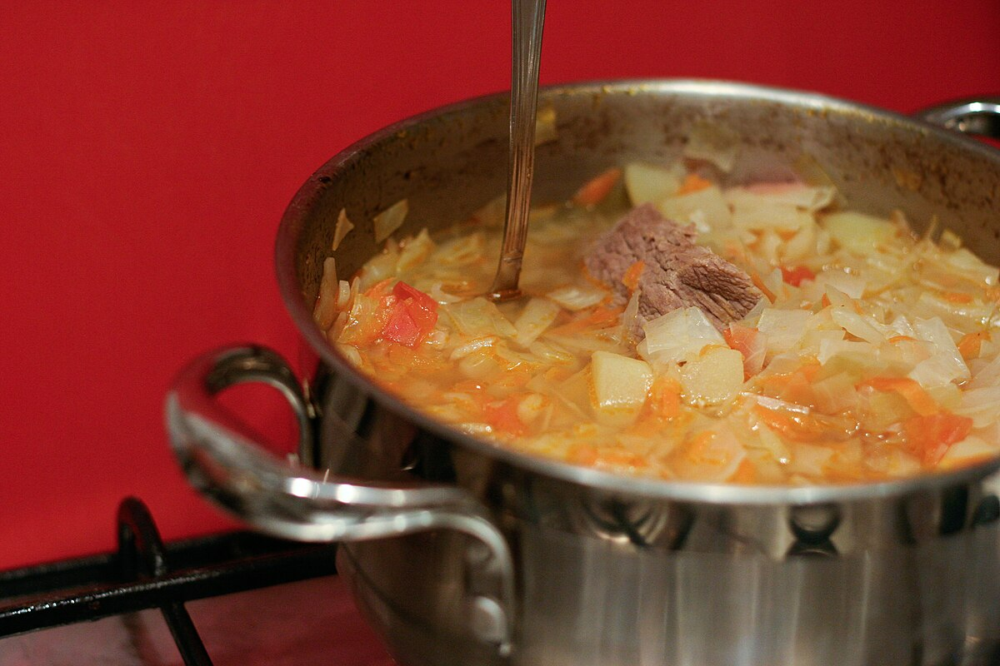

Home Page
Cabbage Borscht

Image credited to Victoria Vasilieva via the Creative Commons License 2.0.
Description
This soup is very healthy in fact I've seen people state that most cabbage soups are ideal for burning fat. It is slightly acidic and very tasty!
Ingredients
- 2lbs. soup bone/beef
- 2qts. cold water
- 2 carrots, chopped
- 2 medium potatoes, cubed
- 1 medium onion, minced
- 1tsp. salt
- 1/2 a star aniseed
- 10 whole allspice
- 1 small bayleaf
- 1 1/2tbsp parsley, chopped
- dash of pepper
- 1 1/2c. tomato juice
- 1/2c. heavy cream/evaporated milk
- 1tsp. pickling spice
- 1 tin tomato soup
Steps
- Boil together for at least 1 1/2 hours the soup bone and water. Add more water as needed to make 2qts. of stock.
- Add vegetables, except tomato juice and soup, and add the seasonings.
- Cook until vegetables are done then add the tomato soup and juice then return to a boil.
- Just before serving add the cream.
Home Page